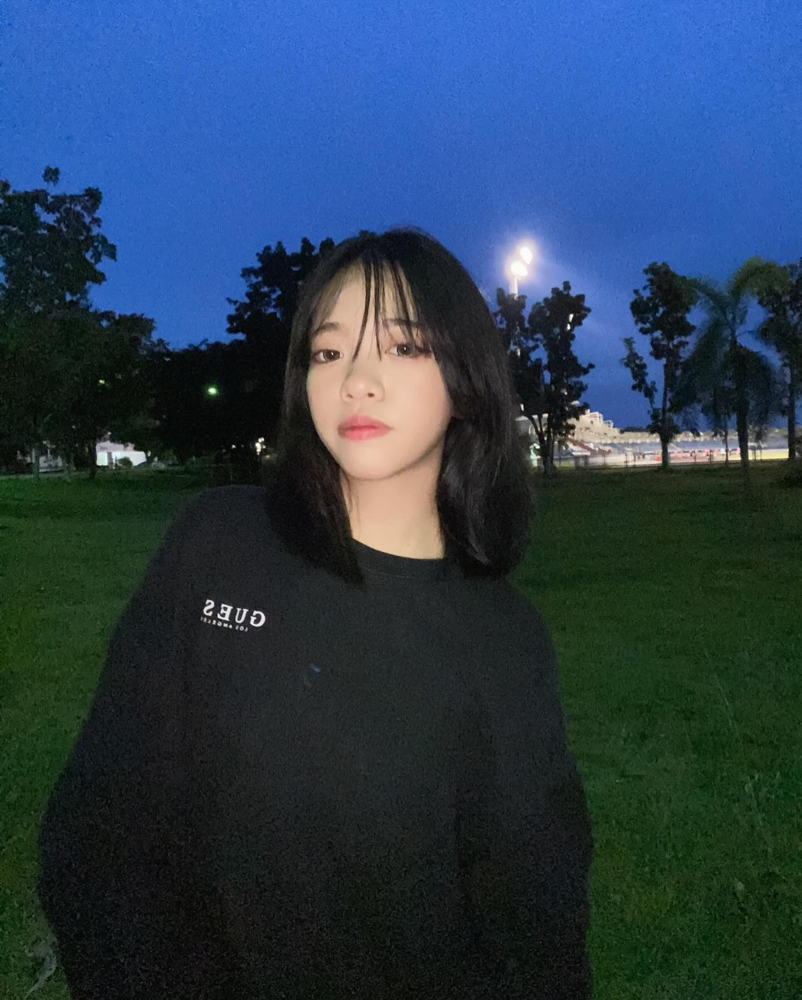

ประวัติส่วนตัว
ข้อมูลส่วนตัว
ชื่อ: นางสาว กัญญาณัฐ กลมวง
เกิดวันที่: 2 กรกฎาคม 2551
ชื่อเล่น: ไอวี่
ที่อยู่: 19/65 หมู่6 ซอยสามัคคี17 ถนนภูติอนันต์11 ตำบลพลูตาหลวง อำเภอสัตหีบ จังหวัดชลบุรี
อายุ: 16ปี
ปวช.2 : แผนกวิชาเทคโนโลยีสารสนเทศ วิทยาลัยเทคนิคสัตหีบ
ข้อมูลด้านการศึกษา
ระดับอนุบาล - ประถมศึกษา ศึกษาที่ : โรงเรียนสัตหีบเขตกองเรือยุทธการ
เรียนตั้งแต่ อนุบาล ถึง ป.6
ระดับมัธยม ศึกษาที่ : โรงเรียนสิงห์สมุทร
เรียนตั้งแต่ มัธยม 1 - 3
ปัจจุบัน ศึกษาที่ : วิทลัยเทคนิคสัตหีบ
กำลังศึกษาอยู่ระดับชั้น ปวช.2
งานอดิเรก/สิ่งที่สนใจ
เล่นเกม
ดูซีรีย์
ฟังเพลง
แรงบันดาลใจที่เลือกเรียนคอมพิวเตอร์
มีความสนใจในด้านคอมพิวเตอร์คาดว่าสามารถต่อยอดได้ไกลจึงเลือกเรียนสาขานี้
ผลงาน/เกียรติคุณ
ประถมศึกษาปีที่3-4 เคยเข้าแข่งขันศิลปะหัตถกรรม
ระดับ เขต ได้รางวัลชนะเลิศ
ระดับ จังหวัด ได้รางวัลชนะเลิศ
ระดับ ภาค ได้รางวัลรองชนะเลิศอันดับที่6